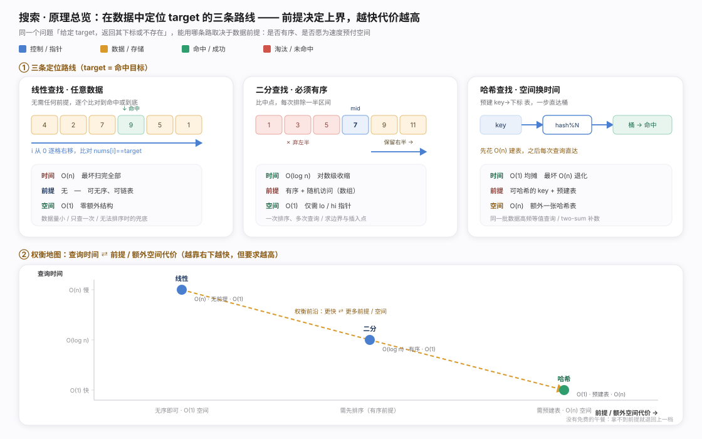
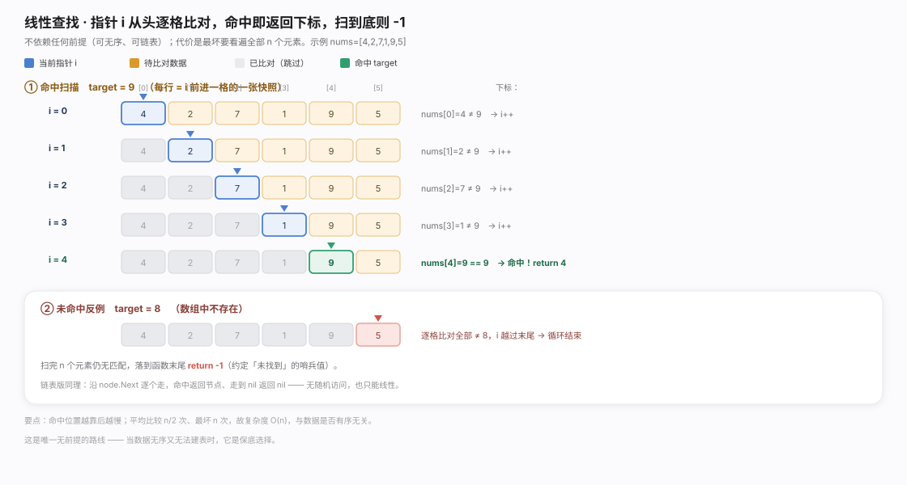
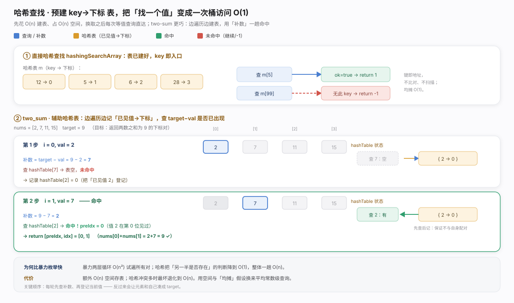
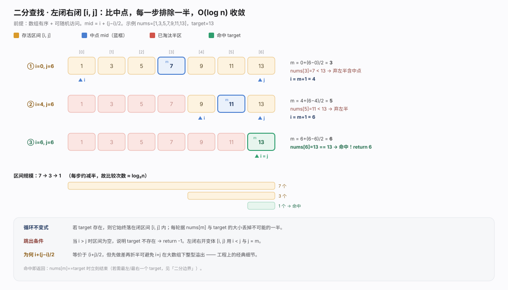
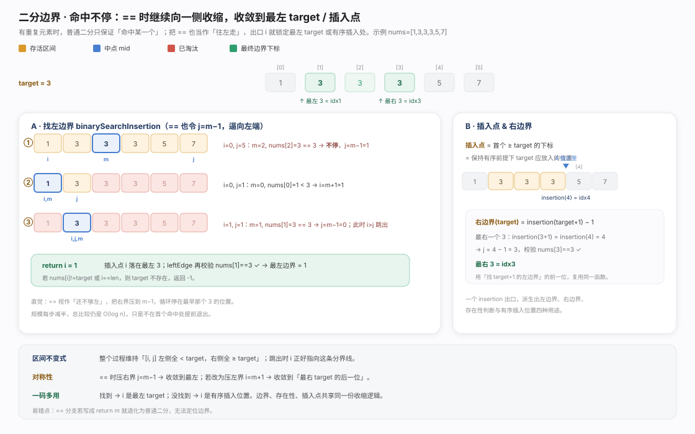

在一堆数据里定位 target 或断定不存在，选型由数据前提决定：无序只能线性 O(n)、有序可随机访问用二分 O(log n)、肯预建表用哈希均摊 O(1)。本质是「前提越强、越舍空间，买到越低查询时间」，选型第一问是「数据满足什么前提、要查多少遍」——一次性查询用线性，高频查询才值得为排序/建表预付成本。

线性查找是唯一无前提路线：指针从 0 右移逐格比对，命中返回下标、到末尾返回 -1；只依赖「能逐个访问」，数组、链表皆可。平均 n/2、最坏 n 次比较，O(n) 与是否有序无关。价值在于兜底：数据量小、只查一次，或无法排序、建不起表时永远可用——别在这些场景强上二分/哈希，预付成本往往更贵。
package chapter_searching
import (
. "helloalgo/pkg"
)
/* 线性查找（数组） */
func linearSearchArray(nums []int, target int) int {
// 遍历数组
for i := 0; i < len(nums); i++ {
// 找到目标元素，返回其索引
if nums[i] == target {
return i
}
}
// 未找到目标元素，返回 -1
return -1
}
/* 线性查找（链表） */
func linearSearchLinkedList(node *ListNode, target int) *ListNode {
// 遍历链表
for node != nil {
// 找到目标节点，返回之
if node.Val == target {
return node
}
node = node.Next
}
// 未找到目标元素，返回 nil
return nil
}
哈希查找把「找值」变成「算地址」：key 经哈希函数直接得桶下标，不比较不扫描，均摊 O(1)；代价是表需 O(n) 预建、O(n) 常驻空间，冲突严重时最坏退化 O(n)。twoSum 展示边遍历边建表：每到一个 val 先查 target-val 是否已见、命中返回，否则再登记——先查后记顺序不可颠倒（否则元素与自身凑成 target），把暴力 O(n²) 降到一趟 O(n)。
package chapter_searching
import . "helloalgo/pkg"
/* 哈希查找（数组） */
func hashingSearchArray(m map[int]int, target int) int {
// 哈希表的 key: 目标元素，value: 索引
// 若哈希表中无此 key ，返回 -1
if index, ok := m[target]; ok {
return index
} else {
return -1
}
}
/* 哈希查找（链表） */
func hashingSearchLinkedList(m map[int]*ListNode, target int) *ListNode {
// 哈希表的 key: 目标节点值，value: 节点对象
// 若哈希表中无此 key ，返回 nil
if node, ok := m[target]; ok {
return node
} else {
return nil
}
}package chapter_searching
/* 方法一：暴力枚举 */
func twoSumBruteForce(nums []int, target int) []int {
size := len(nums)
// 两层循环，时间复杂度为 O(n^2)
for i := 0; i < size-1; i++ {
for j := i + 1; j < size; j++ {
if nums[i]+nums[j] == target {
return []int{i, j}
}
}
}
return nil
}
/* 方法二：辅助哈希表 */
func twoSumHashTable(nums []int, target int) []int {
// 辅助哈希表，空间复杂度为 O(n)
hashTable := map[int]int{}
// 单层循环，时间复杂度为 O(n)
for idx, val := range nums {
if preIdx, ok := hashTable[target-val]; ok {
return []int{preIdx, idx}
}
hashTable[val] = idx
}
return nil
}
二分查找前提是有序 + 可随机访问。双闭区间 [i,j] 取中点 m=i+(j-i)/2：小于则 i=m+1、大于则 j=m-1、相等命中，每步丢掉一半，约 log₂n 次；i>j 区间空返回 -1，O(log n)。两处关键：中点写 i+(j-i)/2 而非 (i+j)/2 避免整型溢出；循环不变式「target 若存在必在 [i,j] 内」保证减半不误删。
package chapter_searching
/* 二分查找（双闭区间） */
func binarySearch(nums []int, target int) int {
// 初始化双闭区间 [0, n-1] ，即 i, j 分别指向数组首元素、尾元素
i, j := 0, len(nums)-1
// 循环，当搜索区间为空时跳出（当 i > j 时为空）
for i <= j {
m := i + (j-i)/2 // 计算中点索引 m
if nums[m] < target { // 此情况说明 target 在区间 [m+1, j] 中
i = m + 1
} else if nums[m] > target { // 此情况说明 target 在区间 [i, m-1] 中
j = m - 1
} else { // 找到目标元素，返回其索引
return m
}
}
// 未找到目标元素，返回 -1
return -1
}
/* 二分查找（左闭右开区间） */
func binarySearchLCRO(nums []int, target int) int {
// 初始化左闭右开区间 [0, n) ，即 i, j 分别指向数组首元素、尾元素+1
i, j := 0, len(nums)
// 循环，当搜索区间为空时跳出（当 i = j 时为空）
for i < j {
m := i + (j-i)/2 // 计算中点索引 m
if nums[m] < target { // 此情况说明 target 在区间 [m+1, j) 中
i = m + 1
} else if nums[m] > target { // 此情况说明 target 在区间 [i, m) 中
j = m
} else { // 找到目标元素，返回其索引
return m
}
}
// 未找到目标元素，返回 -1
return -1
}
二分边界查找处理重复元素：binarySearchInsertion 把 == 当作「还不够左」，命中不返回而令 j=m-1 继续左缩，跳出时 i 停在最左 target 位（等于则为左边界、否则为插入点），不变式「i 左侧全 < target、右侧全 ≥ target」。右边界转化为 binarySearchInsertion(target+1)-1。一段收缩逻辑同服务左/右边界、存在性、插入位四用；易错点：== 分支写成 return m 即退化回普通二分、边界能力尽失。
package chapter_searching
/* 二分查找最左一个 target */
func binarySearchLeftEdge(nums []int, target int) int {
// 等价于查找 target 的插入点
i := binarySearchInsertion(nums, target)
// 未找到 target ，返回 -1
if i == len(nums) || nums[i] != target {
return -1
}
// 找到 target ，返回索引 i
return i
}
/* 二分查找最右一个 target */
func binarySearchRightEdge(nums []int, target int) int {
// 转化为查找最左一个 target + 1
i := binarySearchInsertion(nums, target+1)
// j 指向最右一个 target ，i 指向首个大于 target 的元素
j := i - 1
// 未找到 target ，返回 -1
if j == -1 || nums[j] != target {
return -1
}
// 找到 target ，返回索引 j
return j
}package chapter_searching
/* 二分查找插入点（无重复元素） */
func binarySearchInsertionSimple(nums []int, target int) int {
// 初始化双闭区间 [0, n-1]
i, j := 0, len(nums)-1
for i <= j {
// 计算中点索引 m
m := i + (j-i)/2
if nums[m] < target {
// target 在区间 [m+1, j] 中
i = m + 1
} else if nums[m] > target {
// target 在区间 [i, m-1] 中
j = m - 1
} else {
// 找到 target ，返回插入点 m
return m
}
}
// 未找到 target ，返回插入点 i
return i
}
/* 二分查找插入点（存在重复元素） */
func binarySearchInsertion(nums []int, target int) int {
// 初始化双闭区间 [0, n-1]
i, j := 0, len(nums)-1
for i <= j {
// 计算中点索引 m
m := i + (j-i)/2
if nums[m] < target {
// target 在区间 [m+1, j] 中
i = m + 1
} else if nums[m] > target {
// target 在区间 [i, m-1] 中
j = m - 1
} else {
// 首个小于 target 的元素在区间 [i, m-1] 中
j = m - 1
}
}
// 返回插入点 i
return i
}一句话选型：线性无前提保底，数据少或只查一次；二分是有序数据里省内存（O(1) 额外空间）的首选，兼求边界与插入点；哈希适合同批数据的高频等值查询，需为均摊 O(1) 付出 O(n) 空间。沿「无序 → 需有序 → 需预建表」前提递增线，查询时间买到 O(n) → O(log n) → O(1)，拿不到前提退回上一档（详见对比图）。
- hello-algo《Hello 算法》第 10 章「搜索」（linear_search.go / binary_search.go / binary_search_edge.go / binary_search_insertion.go / hashing_search.go / two_sum.go 的原始出处与配套讲解）。 - Cormen, Leiserson, Rivest, Stein.《算法导论》(CLRS)：第 2.3 节分治与二分思想、第 11 章 Hash Tables（哈希查找与均摊分析）。 - Knuth, D. E. *The Art of Computer Programming, Vol. 3: Sorting and Searching*, §6.1 顺序查找、§6.2 二分查找（含溢出与边界细节）、§6.4 Hashing。 - Bentley, J. & McIlroy. “Programming Pearls” — 二分查找中点计算的整型溢出问题（i + (j-i)/2 的由来）。 - Wikipedia — *Binary search algorithm*：区间不变式、最左/最右边界（lower/upper bound）与插入点的统一表述。